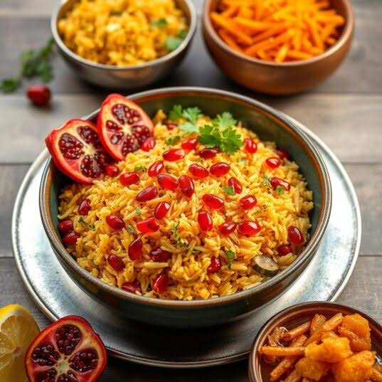

Pilau

Pilau Dish
the pilau Dish is originally comes Asia where it was and is for now popular and here i africa it's mostly from the Eastern Coast countries like
Tanzania , Kenya and Zanzibar.
The dish got that aromatic flavor from specialized spice blend called Pilau Masala
which features Cumin , cardamon Cinnamon , cloves ,and Black Paper ,
it's traditionally mixed or simmerd with beef , chiken, goat meat
and consider a must-have centerpiece for major celebrations , holidays and weddings
across the whole East Africa.
Ingredients
- Basmati rice
- Onions(sliced)
- Garlic
- Ginger(minced or oaste)
- vegetable oil or ghee
- Cinnamon
- Cardamon
- Cloves
- Cumin
- Black Pappercorn
- Pilau Masala
- Potatoes(peeled and cut optional)
- salt
- water or meat stock
Cooking Steps
- boil the meat
with a bit garlic , salt and ginger on it until tender.
- save the broth
to use later for cooking the rice.
- heat oil or ghee
in large pot over medium heat.
- fry onions
until they turn dark golden brown to give the pilau it's classic color.
- add the remaining garlic and ginger
let it marinate for a minutes.
- stir in the whole spices
stir it and pilau masala powder until fragrant.
- Add boiled meat (and potatoes if using it)
sear it until brwon.
- mix the washed rice
stir gently for two minutes to coat the grains in the spiced oil.
- pour in the saved broth
ajust the salt to taste
- bring to a boil
untill most of the water or liquid evaporates and craters form in the rice.
- cover the pot tighly
with a lid or aluminum foil to trap the steam.
- reduce heat to the lowest setting
the let it steam for 15 to 20 minutes until the rice is fluffy
- fluff with a fork
this is the final step before serving.